M2 · Part A — Data as a Constructed Record, Data Sources, Data Quality
Module 2 notes, Sections 2.1–2.3 (PDF pages 5–45, printed pages 173–213). This is the core of Quiz 2.
Module 1 asked what problem are we solving. Module 2 asks the question every later model depends on: what exactly is in the dataset, where did it come from, and is it fit for this task? The single idea that runs through the whole module is that data are made, not found — and the way they were made decides what any model trained on them can and cannot learn.
In order, this part covers: data as a constructed record (2.1); the eight data sources and the errors each one bakes in (2.2); and the six dimensions of data quality (2.3), each with the numbers from the notes' worked hospital example.
1. Data are produced, not simply found (2.1.1)

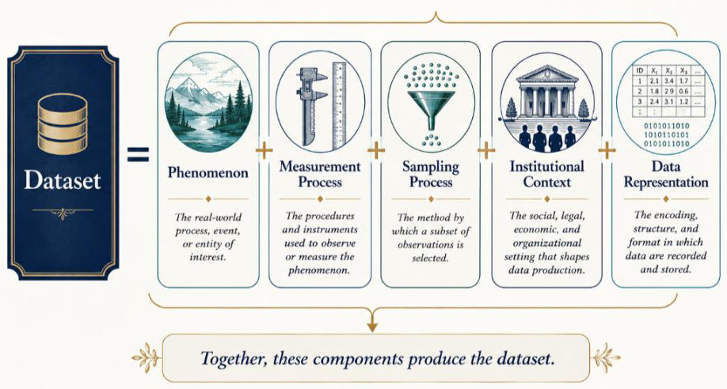
The phrase "raw data" is an oxymoron: data are never raw, they are always cooked. Before a single row is entered, people have decided:
| Stage | Decisions made |
|---|---|
| Conceptualization | What phenomenon matters? How are variables and labels defined? |
| Observation | Unit of analysis; who/what is included or excluded; which instruments/sensors; how often to measure |
| Engineering | Which observations are recorded; how missing data are encoded; how data are stored, linked and transformed |
Data are produced, not found (notes §2.1.1): “Every dataset is actively produced through a long chain of subjective, technical, and systemic choices.”
A column called disease, fraud, dropout, risk or success is never self-defining — its meaning comes from the operational rules, human choices and institutional practices that generated it.
Datasheets for Datasets (Gebru et al., 2018) were proposed to force this transparency: document motivation, composition, collection, preprocessing, intended uses, distribution and maintenance.
Data are an engineered artifact: phenomenon + measurement + sampling + institution + representation. A label is a decision, not a discovery.
2. Fitness for purpose — (2.1.2)
Fitness for purpose (notes §2.1.2): “There is no such thing as a universally good or high-quality dataset in a vacuum. A dataset is only good for a specific purpose under specific conditions.”
There is no universally good dataset. Quality is contextual — consistent with NIST, which judges quality and representativeness relative to the intended use (accuracy, completeness, consistency, relevance, timeliness).
A dataset may be: adequate for descriptive statistics but flawed for causal inference; useful retrospectively but unsuitable for real-time prediction; representative of an urban hospital but useless for a rural clinic; fine for adults but invalid for paediatrics; good for binary classification but poorly calibrated for absolute risk.
Never ask "Is this data good?" Always ask "Is this data good for the specific task I am trying to accomplish, in this context, right now?" Data are a constructed map, not a mirror.
Setting (notes, Example 38): A university wants an AI system that predicts which students are at risk of dropping out so advisors can intervene early. How is the dataset constructed, and is it fit for each intended use?
Worked answer:
Step 1 — Define the problem. "Dropout" could mean: permanently leaving; not enrolling next semester; transferring; temporary leave; graduating late. Each definition labels different students → the target is constructed, not discovered.
Step 2 — Choose what to measure (Table 4):

Students with severe personal problems can look "healthy" in the data simply because those problems were never measured.
Step 3 — Sampling. Only main-campus students; online, exchange, graduate and satellite-campus students excluded → representative of one population only.
Step 4 — Recording. Attendance via scanners, but some instructors never scan, some record manually, some classes have no policy. A single NA may mean skipped, not uploaded or never taken.
Step 5 — Institutional context. University A labels dropout after one missed semester; University B waits two years. Same column name, different rules → merging them creates misleading training data.
Fitness for purpose of the same dataset:
| Task | Verdict | Why |
|---|---|---|
| T1 Annual reporting (% first-years who left) | Probably sufficient | Only approximate counts needed |
| T2 Early-warning system (predict 6 months ahead) | Inadequate | Attendance arrives weeks late; finance updated once a semester; no mental-health indicators |
| T3 National model for every university | Problematic | One university; different admissions, demographics and dropout definitions |
| T4 "Does library use reduce dropout?" | Cannot answer | Confounding: library users may be more motivated, better prepared, wealthier, better supported → association, not causation |
Practice Q1–10 and Scenario S1 (student risk) and Reflection R1 are built on exactly this example. Expect: "evaluate the dataset using " — define D, T and C explicitly, then judge.
Two central ideas: (1) data are produced, not found; (2) quality is purpose-dependent — the same data can pass for reporting and fail for prediction, causation or a new population.
3. Data sources and their inherent realities (2.2)
The source of data determines its data-generating process, and therefore the errors, biases, governance needs and engineering problems baked into it.
3.1 Surveys
Surveys (notes §2.2.1): “Surveys collect information by prompting respondents with structured or semi-structured questions …”
Information collected by prompting respondents with structured or semi-structured questions (income, health questionnaires, satisfaction, opinion polls).
Advantage: capture latent constructs absent from routine databases — beliefs, preferences, intentions, self-reported behaviour, social circumstances, perceived quality of life.
| Survey error | Meaning | Example 39 (online physical-activity survey) |
|---|---|---|
| Coverage error | Sampling frame misses part of the target population | Online-only survey misses older/remote adults without internet |
| Sampling error | Sample differs from population purely by chance | Random draw happens to include more urban gym-goers |
| Nonresponse bias | Respondents differ systematically from refusers | 4,000 of 10,000 don't reply; inactive people less interested → overestimates activity |
| Recall bias | Inaccurate memory | Exercised twice, remembers four times |
| Social-desirability bias | Socially acceptable rather than true answers | "I exercised five times" instead of once |
| Instrument effects | Wording, order, translation change responses | "exercise" vs "moderate or vigorous physical activity" — the walker answers 0 vs 5 |
AI implication: a model trained on survey data may learn reporting behaviour rather than the construct (self-reported exercise = actual activity × willingness to report). E.g. more-educated people report more accurately, so the model may wrongly link education with activity; applied to wearable data, it degrades.
Required documentation: target population, sampling frame, recruitment procedure, response rate (60% = 6,000/10,000), weighting scheme, exact wording, administration mode, missingness handling, language versions, known limitations.
3.2 Sensors
Sensors (notes §2.2.2): “Sensors convert physical phenomena into recorded digital signals …”
More realistically, , with = environmental conditions and = device-specific behaviour.
Challenges: calibration drift, device replacement, firmware updates, irregular sampling, clock misalignment, packet loss, saturation/clipping, environmental interference, changing units, delayed transmission, duplicated events.
Critical questions: Was it calibrated? Range and temporal resolution? How are failures encoded — does zero mean zero or missing? Device time or server time? Did hardware change during collection? Comparable across sites?
Sensor data look objective, but the instrument and acquisition process shape what is observed.
3.3 Web data
Advantages: massive volume, rapid availability, diverse content, naturalistic behaviour, broad coverage. Limitations: users ≠ general population; platform algorithms shape what users see and produce; bots and coordinated campaigns; duplicated content; uncertain identities; changing interfaces; Terms-of-Service/copyright/privacy issues; deleted content persists in archives; demographics inferred unreliably.
Platform as measurement (notes §2.2.3): “Observed web behavior is not a direct measure of stable human preference. It is a reaction within an engineered environment, defined by a combination of user, interface, ranking algorithm, moderation, and platform incentives.”
Observed web behaviour is a reaction within an engineered environment — user × interface × ranking algorithm × moderation × platform incentives — not a direct measure of stable preference.
Setting (notes, Example 40): Instead of a nationwide survey, a government agency collects 5 million public posts from a popular social media platform and trains a model to classify each post as supportive, neutral, or opposed to a new environmental policy. What limitations emerge?
Worked answer:
- Non-representative users: older, rural, offline people rarely post → describes platform opinion, not the country.
- Algorithms shape the data: engagement ranking amplifies polarized posts; moderates are under-collected.
- Bots: hundreds of accounts post identical messages → automation mistaken for sentiment.
- Duplicates: one post reshared 100,000 times = one opinion counted 100,001 times.
- Uncertain identity: "30-year-old in the capital" may be a teenager, a company, a fake profile.
- Interface change: platform switches to favour short video → text posts fall, not because interest fell.
- Legal/ethical: scraping against ToS, copyrighted content, deleted posts kept in archive.
- Result: excellent accuracy on platform data, large drop on a representative survey — the model learned platform language, engagement behaviour, amplified topics and bot activity.
Document: source platforms, collection method (API/scraper/archive), period, sampling (keywords/hashtags), preprocessing of duplicates/spam/bots/deletions, identity limitations, legal compliance, known biases.
3.4 System and application logs
Automated records (clickstreams, app events, server errors, auth logs, model-inference logs, DB queries, transactions). Strengths: detailed event sequences, high temporal resolution, operational evidence, scale, monitoring/debugging. Limitation: a logged event only proves that software recorded something, not that the real event happened as interpreted — inconsistent event definitions, missing instrumentation, schema changes, duplicates after retries, out-of-order arrival, ad-blockers, clock differences, silent logging failures, app-update changes.
Logs (notes §2.2.4): “Logs are automated records produced by software systems, applications, networks, and devices …”
Log limitation (notes §2.2.4): “A logged event only proves that software recorded something – not necessarily that the real-world event happened exactly as interpreted.”
| Timestamp | Meaning |
|---|---|
| Event time | When the real-world action happened |
| Recording time | When the local system logged it |
| Arrival time | When it reached the central pipeline |
| Processing time | When the pipeline handled it |
Confusing these is a primary cause of temporal leakage and wrong feature windows.
3.5 Administrative records
Generated to run organizations, not for research (billing, hospital records, enrolment, tax, insurance claims, police/court, employment, social services). Advantages: large populations, longitudinal, operationally relevant, low marginal cost, linked to real decisions.
Administrative records (notes §2.2.5): “Administrative records are generated to support organizational operations, not scientific research …”
Administrative data (notes §2.2.5): “Administrative data encodes institutional behavior not objective reality.”
A diagnosis code may reflect billing optimization; an arrest record reflects policing patterns; spending reflects access to care; absences may reflect transport or caregiving; unemployment records omit the informal economy.
Setting (notes, Example 41): A national health service wants a model that predicts which patients will be readmitted within 30 days of discharge, using existing administrative records (admission dates, diagnosis and procedure codes, insurance claims, length of stay, billing). Why are these records not a measure of true health status?
Worked answer:
- Billing codes ≠ clinical reality: Hospital X codes every complication (more reimbursement), Hospital Y only the primary diagnosis → mild and severe diabetics can share one code; "sicker" hospitals may just code more.
- Access shapes the data: Patient A lives near a hospital and is readmitted; Patient B, remote, never returns → no readmission record ≠ recovery.
- Policy shapes the records: Hospital A admits for overnight observation, Hospital B treats as outpatient → only A creates admissions.
- Missing populations: private-hospital patients, people who never seek care, uninsured, those who die before arrival → data = utilization, not burden of disease.
- The model learns delivery patterns: a neighbourhood with high readmission may simply be closer to an ED or have a lower readmission threshold.
3.6 Controlled experiments
Deliberately assign conditions to estimate causal effects; in a randomized experiment makes groups comparable in expectation. Strengths: clear intervention, temporal ordering, reduced confounding, prespecified outcomes, controlled measurement. Limitations: ethical/practical constraints, noncompliance, attrition (dropout of participants, biasing if leavers differ), contamination between arms, limited external validity, imperfect outcome measures, selective recruitment, site differences. Experimental data is not automatically unbiased.
3.7 Public datasets
Advantages: accessible, reproducible, shared benchmarks, low entry barrier, standardized comparison, educational. Risks: outdated versions, unclear provenance, inappropriate reuse, hidden preprocessing, label errors, undocumented exclusions, benchmark saturation (models overfit to the test set), privacy risks, licence restrictions.
"Public" does not mean: free of ethical concerns, every use permitted, labels correct, representative of deployment, or that the original consent covered all future uses.
Setting (notes, Example 42): How reliable are the test-set labels of widely used public machine-learning benchmarks, and what happens to model rankings when they are corrected?
Worked answer:
Ten widely used vision, NLP and audio benchmarks contain many wrong or ambiguous test labels (≥3.3% on average; ≥6% in ImageNet validation). Small gaps between state-of-the-art models are often smaller than the number of mislabeled test examples, and rankings change after correction. They used Confident Learning (estimating the joint distribution of noisy and true labels) to flag errors, confirmed by human review. Lesson: audit and version benchmarks continuously; data quality matters as much as model quality.
3.8 Synthetic data
Artificial observations mimicking the statistics of real data, from rule-based simulators, mechanistic models, agent-based models, GANs, VAEs, diffusion models, LLMs, or sampling from fitted distributions.
Uses: simulate rare events, privacy-preserving access, augment under-represented classes, test pipelines, train in unsafe/expensive settings, counterfactual scenarios, balancing. Advantages: controlled labels, configurable scenarios, less dependence on sensitive records. Risks: reproduces source bias, omits rare subgroups, oversimplifies variability, unrealistic correlations, leaks training records, misleadingly clean labels, over-confidence in sim-to-real transfer. Synthetic ≠ anonymous or risk-free.

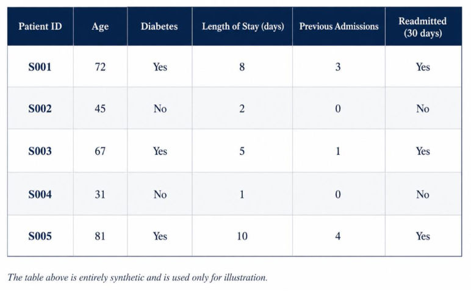

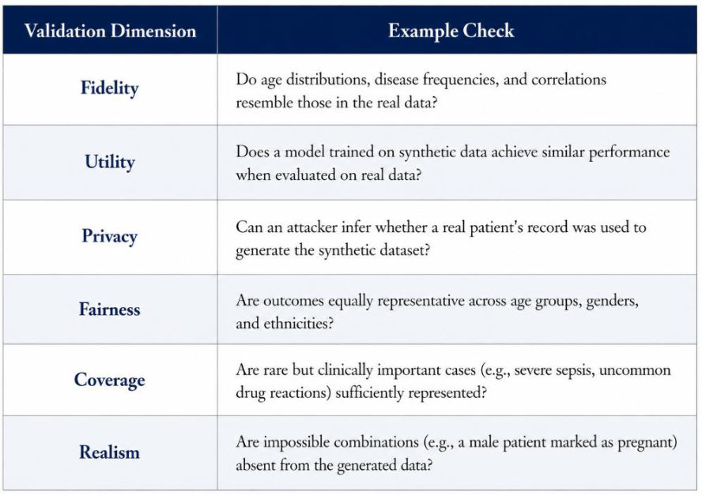
Synthetic data (notes §2.2.8): “Synthetic data consists of artificially generated observations designed to mimic the statistical properties of real data.”
| Dimension | Question | Example check |
|---|---|---|
| Fidelity | Preserves relevant distributions/relationships? | Age distributions, disease frequencies, correlations resemble real data |
| Utility | Supports the intended analysis? | Model trained on synthetic performs similarly on real data |
| Privacy | Can individuals be inferred/reconstructed? | Can an attacker tell if a real patient's record was used? |
| Fairness | Subgroup properties preserved without amplifying bias? | Outcomes representative across age, gender, ethnicity |
| Coverage | Rare but critical edge cases present? | Severe sepsis, uncommon drug reactions |
| Realism | Obeys domain constraints? | No "male patient marked pregnant" |
Setting (notes, Example 43): Because of privacy regulations, researchers cannot freely access real patient records, so they build a synthetic dataset with a generative model trained on historical hospital data to develop a 30-day readmission model. How is it used, and what are the risks?
Worked answer:
Used for privacy-preserving research, balancing rare complications, software testing, counterfactuals ("what if stay were 2 days shorter?"). Risks: if young chronically ill patients were under-represented in the source, the generator inherits it → model good for the elderly, poor for the young; rare combinations missing; memorised records may leak; records unrealistically clean (no missing values or errors).
Each source has its own data-generating process: surveys → response behaviour; sensors → instrument and drift; web → platform as instrument; logs → four timestamps; administrative → institutional behaviour; experiments → attrition and external validity; public → label errors and saturation; synthetic → validate fidelity, utility, privacy, fairness, coverage, realism.
4. The six dimensions of data quality (2.3)
Quality is multidimensional — a dataset may be complete yet inaccurate, timely yet unrepresentative, consistent yet systematically mismeasured.

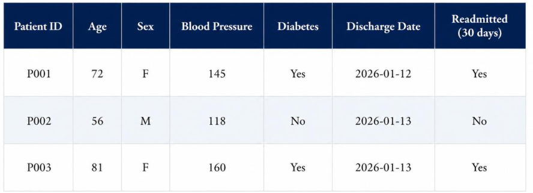

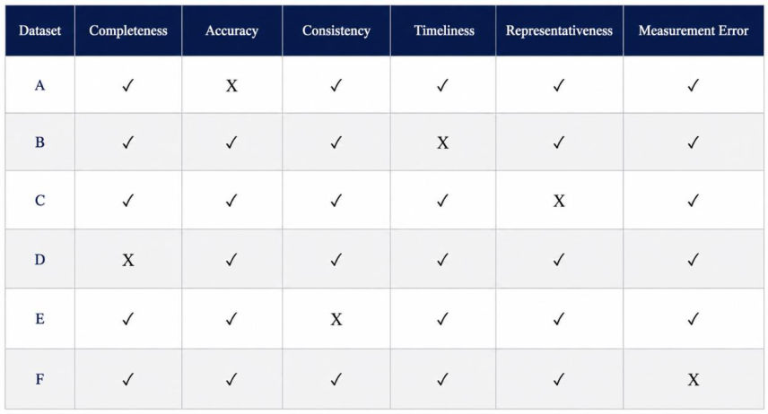
Table 8: A fails accuracy (BP monitor +20 mmHg), B timeliness, C representativeness (nearly all elderly), D completeness (25% BP missing), E consistency, F measurement error. Each is good in some respects and bad in another — quality is not a single number.
4.1 Completeness
Completeness (notes §2.3.1): “Completeness measures whether all required data is actually present.”
Types of incompleteness: missing cells, records, time intervals, population subgroups, modalities, labels, metadata, provenance.
Problem (notes, Tables 9–10): (i) A blood-pressure column has 5 patients, 2 of them missing — compute cell-level completeness. (ii) Every patient should have age, gender, blood pressure and diabetes status, and only 3 of 5 records have all four — compute record-level completeness. (iii) Practice Q32: a variable has 80 missing values among 1,000 records — compute its cell-level completeness.
Worked answer:
- 5 patients, 2 BP values missing → cell completeness (60%).
- Only 3 of 5 records have age, gender, BP and diabetes → record completeness .
- (iii) Practice Q32: (92%).

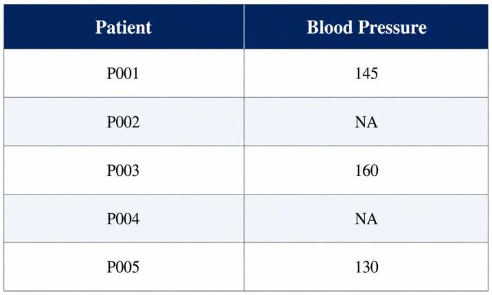

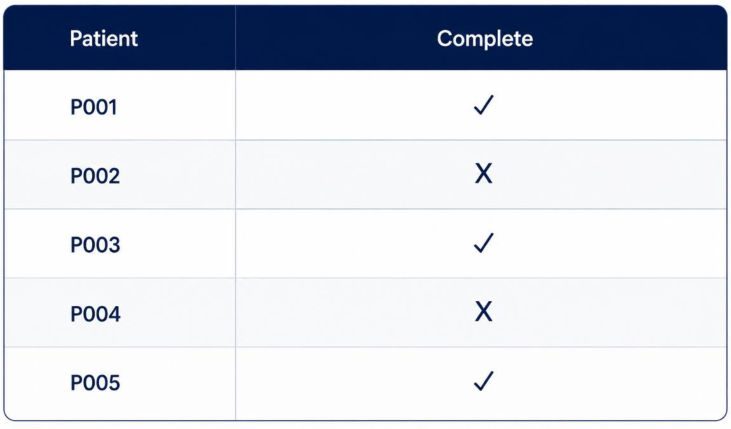
Context matters: missing is not always a defect — a lab test that was clinically unnecessary, a question intentionally skipped, a location with no sensor. A dataset can be 99% populated yet exclude a vulnerable population entirely. The critical question: does the missing information prevent reliable use for the intended purpose?
4.2 Accuracy
Accuracy (notes §2.3.2): “Accuracy measures how closely recorded values correspond to the true or accepted reference values.”
Closeness of recorded values to a trusted reference. Numeric: , summarised by . Categorical: .
Problem (notes, Table 11): (i) A patient's true blood pressure is 140 mmHg but 147 is recorded — what is the error? (ii) For five patients the absolute errors are 7, 2, 3, 5 and 2 mmHg — compute the MAE. (iii) Experts review 100 readmission labels and 95 are correct — compute label accuracy.
Worked answer:
True 140 recorded 147 → mmHg. Errors 7, 2, 3, 5, 2 → mmHg. Experts review 100 labels, 95 correct → 95% label accuracy: every value present (complete) but 5% wrong (inaccurate).

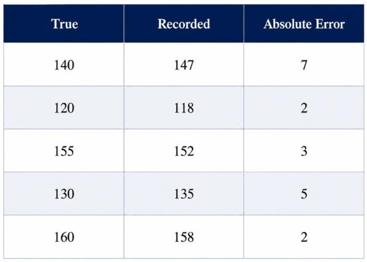
Sources: data entry, poorly calibrated sensors, wrong record linkage, software bugs, ambiguous definitions, outdated info, annotator disagreement, transcription, conversion/format errors. Agreement within a database does not establish correctness — accuracy needs an independent reference.
4.3 Consistency
| Type | Example |
|---|---|
| Formatting | "Male", "M", "1", "man"; DD/MM/YYYY vs MM/DD/YYYY |
| Logical | Deceased before a later visit; child older than parent; discharge (Jan 10) before admission (Jan 15) |
| Structural | Mixed units in one column (70 kg vs 155 lb?); conflicting labels across files; duplicate IDs for different people |
| Cross-system | Same entity recorded differently in different systems |
Constraint-based: discharge date ≥ admission date; ; . Violations can be detected automatically, but resolving them needs domain expertise.

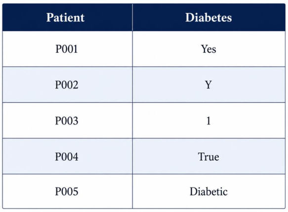
4.4 Timeliness
| Concept | Meaning |
|---|---|
| Freshness | How old the information is |
| Latency | Delay between the event and availability in the system |
| Update frequency | How often values are refreshed |
| Validity period | How long a value stays operationally relevant |
Staleness: ; if it exceeds a task-specific threshold the feature is stale. A fraud system needs milliseconds; annual planning tolerates months.
Problem (notes, Table 13 and 2.3.4 examples): (i) A patient develops diabetes in January but the database is updated in April — what is the latency, and what goes wrong for a February prediction? (ii) The last cholesterol measurement was in January and the prediction is made in October; guidelines require measurements newer than six months — is the feature stale? (iii) Readmission is predicted on discharge day, but training data include whether the patient attended a follow-up two weeks later — what is the problem?
Worked answer:
- Diabetes develops in January, database updated in April → latency 3 months; a February prediction wrongly assumes non-diabetic (Table 13).
- Cholesterol measured in January, prediction in October → months > 6-month guideline → stale.
- Temporal leakage: predicting readmission at discharge using "attended follow-up two weeks later" → 99% evaluation accuracy, fails in deployment.

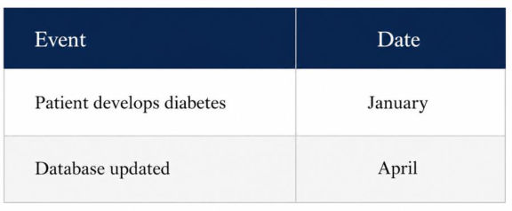
Timeliness and leakage: historical data record when an event occurred; operational systems need when the information became available. Using event timestamps instead of availability timestamps leaks future information.
4.5 Representativeness
Representativeness (notes §2.3.5): “Representativeness asks whether the data adequately reflects the intended target population and the actual operating conditions of deployment.”
— ways that materially change performance, calibration, fairness, robustness or safety at deployment.
| Problem | Example from the notes |
|---|---|
| Performance degradation (unseen feature values) | Speech model trained on American English fails on Scottish accents |
| Unequal subgroup performance | Face recognition trained on light skin fails on darker skin |
| Label distribution shift (different class proportions) | Fraud model trained at 1% fraud deployed at 10% → poorly calibrated |
| Covariate shift (inputs change) | Diagnosis model moved to a hospital with different demographics/practice |
| Concept shift ( mapping changes) | Purchasing behaviour changes after a recession |
| Missing deployment scenarios | Self-driving trained in daylight fails at night/snow |
Axes: demographic, geographic, socioeconomic, linguistic, clinical, temporal, device, environmental, behavioural.
Problem (notes, Tables 14–16): The target population is 40% aged 18–40, 35% aged 41–65 and 25% aged 65+, but the million-patient dataset is 5% / 15% / 80%. Separately, a cross-tabulation shows 4,500 young men, 500 elderly men, 500 young women and 4,500 elderly women. Is the dataset representative?
Worked answer:
Population 40 / 35 / 25% (18–40 / 41–65 / 65+) vs dataset 5 / 15 / 80%. A million patients, but skewed; adding another million elderly does not help. Gender looks balanced (5,000 men, 5,000 women) yet young women (500) and elderly men (500) are severely under-represented — intersectional under-representation.

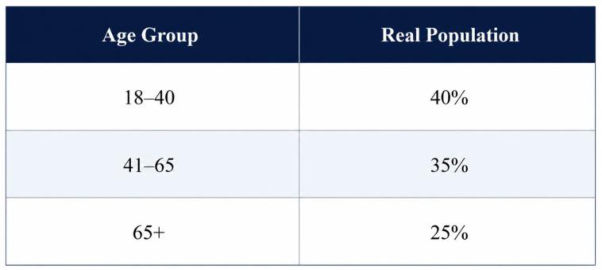

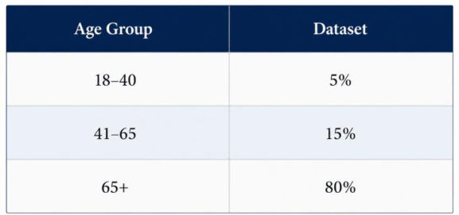

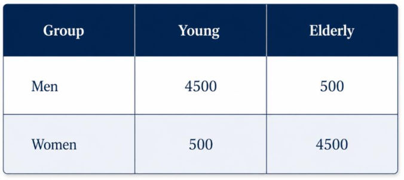
Intersectional evaluation — Gender Shades (Buolamwini & Gebru, 2018): commercial systems fine on gender overall and skin type overall failed badly on darker-skinned women.
4.6 Measurement error and construct validity
Measurement error (notes §2.3.6): “Measurement error is the fundamental difference between an observed value and the true underlying construct or quantity it is intended to measure.”
- Random: , → raises variance, weakens associations, lowers precision, does not bias the centre. (140 ×4 recorded as 138, 141, 142, 139: errors −2,+1,+2,−1, average ≈ correct.)
- Systematic: , → persistent directional shift. (140, 130, 120 recorded as 150, 140, 130: every reading +10; averaging cannot remove it.)
- Differential: varies with a sensitive attribute → critical for fairness. (Wearable heart rate: ±2 bpm light skin, ±10 bpm dark skin.) A model cannot mathematically correct a group measured worse.
Construct validity (notes §2.3.6): “The most dangerous measurement error occurs before the instrument is even used: the chosen variable simply does not measure the intended concept.”
The chosen variable does not measure the intended concept: cost for health need; arrests for crime; clicks for satisfaction; exam scores for intelligence; absence for disengagement. No amount of algorithmic tuning will save the model — it becomes a highly optimized system for measuring the wrong thing.

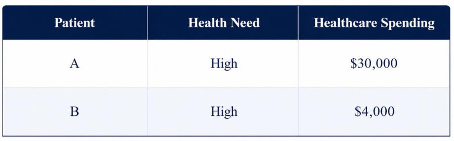
Patient B has the same need but received less care because of access barriers; a model trained on spending concludes B has lower need. The algorithm works exactly as designed — it optimizes the wrong target.
Six questions: Completeness — is it present? Accuracy — is it correct? Consistency — does it agree with itself and the rules? Timeliness — available when needed? Representativeness — does it reflect the deployment population? Measurement error — does the variable faithfully measure the construct?
Source material
The original documents behind these notes. Pick a tab to read it here, page by page, or open it in a new tab.